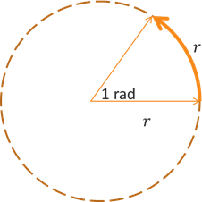
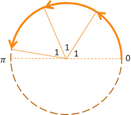

Angle Measure
Trigonometric Functions
Trigonometric Functions
The two primary units that we use when measuring angles are degrees and radians. Just like units of length (inches, miles, meters, etc.) or time (days, minutes, etc.), knowing which unit is being used is important. We must be careful about leaving values without a unit. For example, if you are given a quantity that is measured to be 5, you don't know if that is 5 inches, 5 hours, or 5°. Is this 5 a measurement of length, time, volume, weight, rotation, or something else? Including the unit tells us what is actually being measured. So, let's explore our units of angular measure.
A degree is a unit of angular measurement where 1 degree is \(\frac{1}{360}\) of a full revolution. The degree unit can be expressed using the ° symbol.
This means that a full rotation is 360°, a half rotation is 180°, and a quarter rotation is 90°. A few angles are given below in standard position, with initial side along the positive \(x\)-axis and rotating about the origin. Remember that angles with a counterclockwise rotation are positive while angles with a clockwise rotation are negative.
Degree measures are probably a little easier to understand intuitively, which is why we started with them. However, radians are used more frequently in mathematics and especially in STEM fields. So while you might prefer the niceness of degrees, you really need to begin thinking more in terms of radians as we go through the semester.
A radian is a unit of angular measurement where 1 radian is equal to the amount of rotation for the terminal side to trace out an arc of a circle whose length is equal to the radius of the circle. The radian unit can be expressed using the "rad" abbreviation.
Note that if an angle measurement is given without the ° symbol or "rad" abbreviation, then it is assumed to be a radian measurement.
While that doesn't sound as intuitive or as easy to understand, it has its benefits. To illustrate what a radian looks like, consider the graph below. We have a circle of radius \(r\) and an angle of 1 rad. The arc along the circle between the initial and terminal sides of the angle also has a length of \(r\).
So how do we use radians to measure angles? Consider a similar graph below, but now having a total angle of rotation of 3 radians, or 3 rad. Notice that the 3rd angle is just short of the negative \(x\)-axis, or 180°. It turns out that this little sliver of an angle between the 3rd radian terminal side and the negative \(x\)-axis is roughly 0.14159 (rounded to 5 decimal places). That means that the negative \(x\)-axis has a rotation of \(3 + 0.14159 = 3.14159\) rad from the positive \(x\)-axis, which we define as \(\pi\) = 3.14159 (rounded to 5 decimal places). In other words, a rotation of 180° is equivalent to a rotation of exactly \(\pi\) rad.
This means that a full rotation is \(2\pi\) rad, a half rotation is \(\pi\) rad, and a quarter rotation is \(\frac{\pi}{2}\) rad. Another way to think about radian measure is that the amount of rotation in radians is equal to the length of the arc divided by the radius of the circle. We will look at this in more detail a little later.
One thing that is different about radians versus degrees is that radians are described as a dimensionless unit, or a unitless value. As mentioned above, the radian measure of rotation is equal to the length of the arc divided by the length of the radius. These two measurements of the arc and the radius both have a unit of length. When we divide them, their units cancel out. So while we describe the angular rotation in radians, or rad, it does not have a dimension associated with it like length. Because of this, we will often eliminate the "rad" unit from the expression. So an angle of \(\pi\) rad could also just be expressed as \(\pi\). However, angles in degrees must still include the unit or ° symbol. So 75° is a degree measurement while 75 is a radian measurement, and similarly \({\frac{\pi}{2}}^{\circ}\) is a degree measurement while \(\frac{\pi}{2}\) is a radian measurement. Be careful not to confuse these, and having \(\pi\) in the expression does not guarantee which unit is being used.
What will probably make using radians more difficult is that it incorporates fractions frequently into the radian expressions. The following four graphs show the equivalent radian measure of the corresponding degree angles that were given above.
While looking at these fractions may feel intimidating, remember that fractions are just dividing a whole object into smaller parts. When you learned about fractions way back in elementary school, at some point you probably did so by taking a circle and dividing it into equal slices. We will do the same thing here. For example, since a whole circle is \(2\pi\) rad, we can think of the angle \(\frac{2\pi}{3}\) rad as the whole circle divided into 3 equal parts. This means that the angle \(\frac{2\pi}{3}\) rad is equal to 120° because a full rotation is 360° and we have \(\frac{360}{3} = 120\). This leads us to ask the following question. How can we convert angle measures between degres and radians?
We have just seen that a full rotation has a measure of 360° or \(2\pi\) rad. Reducing both of these values by 2 results in the following conversion factor.
When converting between degrees and radians, we can use one of the following ratios. This works by cancelling out the given unit and changing it to the new unit.
\[\frac{180^{\circ}}{\pi} \text{ or } \frac{\pi}{180^{\circ}}\]This also means that 1 rad ≈ 57.2958° (rounded to 4 decimal places).
The following video demonstrates how we can use these converion ratios to convert degrees to radians and radians to degrees.
Self-Check #1: Convert the angle 160° to an equivalent radian measure. Simplify completely. (Select the most appropriate response.)
(Answer: D) -- Multiply the given angle by \(\frac{\pi}{180^{\circ}}\) to cancel the degree unit. This results in \(\frac{160\pi}{180} = \frac{160\pi \div 10}{180 \div 10} = \frac{16\pi}{18} = \frac{16\pi \div 2}{18 \div 2} = \frac{8\pi}{9}\).
Self-Check #2: Convert the angle \(\frac{3\pi}{5}\) to an equivalent degree measure. Simplify completely. (Select the most appropriate response.)
(Answer: B) -- Multiply the given angle by \(\frac{180^{\circ}}{\pi}\) to cancel the radian unit. This results in \(\frac{3\pi \cdot 180^{\circ}}{5 \cdot \pi} = \frac{3 \cdot 180^{\circ}}{5} = \frac{3 \cdot 180^{\circ} \div 5}{5 \div 5} = \frac{3 \cdot 36^{\circ}}{1} = 108^{\circ}\).
©2025 M4thG33x (new window) Some Rights Reserved.